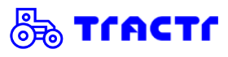

× VIENS COURIRLa plateforme de référence de la course au Québec
Un espace membre qui relie calendrier, classements, avantages et sentiers, bâti sur des fondations sécurisées et transférables à Athlétisme Québec.
1Résumé exécutif
Viens Courir n'est pas un site vitrine : c'est un produit qui orchestre plusieurs sources existantes (Uplifter, Iskio, résultats de chronométrage, tables World Athletics, fichiers GPX) en une plateforme administrable, sécurisée et transférable.
API probée, données mesurées, formules reproduites, pas de promesses
Le comportement réel de l'API Uplifter, à lever avec un token de test
Hébergé au Québec, propriété et autonomie pour Athlétisme Québec
| Décision de stack | Choix | Pourquoi |
|---|---|---|
| CMS et back-office | Payload CMS 3 | Administrable par une équipe non technique, code-first, propriété totale des données |
| Base de données | PostgreSQL | Standard, portable, réversibilité par un simple export |
| Cartographie | MapLibre + MapTiler | Coloration du tracé par surface, tuiles vectorielles, anti-verrouillage |
| Hébergement | VPS Coolify au Québec | Souveraineté Loi 25, coût mutualisé, Athlétisme Québec garde la main |
| Identité membre | Compte local + liaison Uplifter | Uplifter n'offre pas de connexion déléguée : la seule voie confirmée |
2Objectif de la V1
La V1 répond à des questions concrètes pour le coureur et pour Athlétisme Québec. Chacune est portée par une brique métier.
Pour le coureur
Suis-je reconnu comme membre ? Où est le calendrier de référence des courses ? Où me situe mon classement ? Quels avantages et quels sentiers me sont réservés ?
Pour Athlétisme Québec
Comment fidéliser mes membres et donner aux non-membres l'envie d'adhérer ? Comment valoriser les événements sanctionnés ? Comment garder la main sur mes contenus et mes données ?
Le prototype interne d'Athlétisme Québec n'est pas repris comme base. Nous en récupérons la spécification, des composants et les données réelles déjà saisies (environ 20 500 résultats, événements, partenaires, actualités), ce qui accélère le démarrage.
3Architecture
Une décision structure tout le reste : la frontière entre ce qui est administré par un humain et ce qui est produit par la machine.
4Stack et justification
Un socle open source, administrable, hébergé au Québec, et pensé pour rester la propriété d'Athlétisme Québec.
5Périmètre et chiffrage
Découpage par épic et par ticket, estimé en heures. Indicatif et pré-cadrage : ces chiffres seront resserrés à l'issue du palier de cadrage. Base de conversion : un jour égale sept heures.
| Épic | Ticket | Risque | Heures |
|---|---|---|---|
| 1 Socle plateforme | Setup Payload, PostgreSQL, CI/CD, hébergement Coolify | faible | 14 à 21 |
| Auth, rôles, access control (floutage membre) | faible | 14 à 21 | |
| Modèle de données cible (collections) | faible | 7 à 14 | |
| Migration des données du prototype, remédiation | faible | 14 à 21 | |
| 2 Identité Uplifter conditionnel | Liaison compte membre (is_member, fetch) et écran | élevé | 21 à 35 |
Synchronisation du statut (changed_members) et droits | élevé | 28 à 42 | |
| Gestion erreurs, limites de débit, supervision | moyen | 14 à 28 | |
| Conditionnel : couche de rapprochement d'identité si le numéro de membre est instable | élevé | +56 à 105 | |
| 3 Calendrier et Iskio | Modèle événements, éditions, lieux, séries | faible | 14 à 21 |
| Pipeline d'ingestion (staging, normalisation, dédoublonnage, corrections persistantes) | moyen | 28 à 42 | |
| Récupération Iskio (filet de sécurité) | faible | 7 à 14 | |
| Front calendrier (filtres, carte, fiches) et rapports | faible | 21 à 35 | |
| 4 Résultats et classement | Import CSV (parseur repris) et normalisation | faible | 14 à 21 |
| Tables World Athletics (formule) et age grading | faible | 7 à 14 | |
| Moteur de scoring versionné | moyen | 21 à 35 | |
| Rapprochement résultat et membre, file de revue | moyen | 21 à 42 | |
| Front classements et profil coureur | faible | 14 à 28 | |
| 5 Sentiers et GPX | Collection sentiers, import GPX, fiches | faible | 14 à 21 |
| Migration MapLibre, MapTiler, composant carte | faible | 21 à 28 | |
| Reconnaissance de surface hybride (import et correction) | moyen | 21 à 35 | |
| Profil d'élévation, favoris, commentaires, ambassadeurs, QR | faible | 14 à 21 | |
| 6 Avantages membres | Partenaires, codes permanents, accès conditionnel | faible | 7 à 14 |
| 7 Contenu éditorial | Actualités, pages, sections, plans (repris) | faible | 14 à 21 |
| Calculateur d'allure et de VAM (repris) | faible | 4 à 7 | |
| 8 Sécurité et Loi 25 | Évaluations des facteurs vie privée, politiques, registres | moyen | 28 à 42 |
| Journaux d'audit, export et suppression de compte | moyen | 21 à 35 | |
| Minimisation des données, chiffrement, secrets | faible | 14 à 21 | |
| Audit de sécurité (Lot 1) | faible | 35 à 42 | |
| 9 Transverse et livraison | SEO et accessibilité WCAG 2.1 AA | faible | 21 à 35 |
| Tests de bout en bout | faible | 14 à 28 | |
| Documentation, formation, transfert | faible | 21 à 35 |
Hors gestion de projet et marge de risque contractuelle. Le taux horaire est précisé au devis. Ces chiffres calibrent un devis à plus ou moins 20 pour 100, resserré après le palier de cadrage.
6Phasage et jalons
Chaque jalon est un incrément démontrable et arrêtable, adapté à la contrainte de subvention. Le périmètre s'ajuste par tiroirs pour tenir le budget.
7Options à tiroir
Un tronc commun, et des options que vous déclenchez. Chaque tiroir se retire sans casser le reste, ce qui permet d'ajuster le périmètre au budget.
8Coûts de fonctionnement
Frais d'exploitation à la charge d'Athlétisme Québec, distincts du développement. Ordres de grandeur en dollars canadiens, hébergement au Québec pour la Loi 25.
Modèle recommandé : un serveur unique au Québec, orchestré par Coolify
Plutôt que d'empiler des abonnements facturés à l'usage, notre approche habituelle : un seul serveur hébergé au Québec, piloté par Coolify. Il mutualise l'application, la base de données, le stockage et les services annexes. Athlétisme Québec possède le serveur et garde la main sur ses déploiements.
| Poste | Ordre de grandeur |
|---|---|
| Serveur au Québec (4 à 8 cœurs, 8 à 16 Go) | 30 à 90 $ par mois |
| Emails transactionnels (auth, réinitialisation) | 0 à 30 $ par mois |
| Tuiles cartographiques (MapTiler, sinon auto-hébergé) | 0 à 40 $ par mois |
| Nom de domaine et DNS | environ 20 à 40 $ par an |
| Total mensuel indicatif | environ 40 à 160 $ par mois |
Alternative managée si la redondance clé en main est souhaitée (hébergement et base managés, plus MapTiler et emails) : environ 90 à 400 $ par mois, coûts à l'usage et moins de maîtrise directe. L'API Uplifter n'a pas de coût direct (token fourni dans le cadre de l'affiliation), Iskio n'a aucun frais récurrent après rachat, et les tables World Athletics sont gratuites.
9Points d'attention
Ce que le dérisquage a révélé, présenté sans détour.
Uplifter, la seule inconnue majeure
Pas de connexion déléguée ni de notifications automatiques (confirmé). Deux questions restent ouvertes : la stabilité du numéro de membre et les limites de débit. Elles ne se lèvent qu'avec un token de test, d'où le chiffrage conditionnel de cette brique. À noter : le lien de documentation fourni pointait vers une autre société homonyme, ce qui explique peut-être les difficultés de communication.
Données personnelles du prototype
Le prototype expose actuellement les noms et dates de naissance d'environ 12 000 coureurs via une clé publique. Cela présente les caractéristiques d'un incident de confidentialité. La qualification revient au conseil juridique d'Athlétisme Québec ; la remédiation technique est de notre côté et sera traitée en priorité.
Rachat d'Iskio non finalisé
Pas encore d'accès à la base. Sans impact sur le calendrier : le calendrier public d'Iskio est accessible et sert de filet de sécurité pour construire le pipeline sans attendre le rachat.
Consentement des résultats publics
La publication de résultats nominatifs relève du régime de consentement de la Loi 25. Point à cadrer avec le conseil juridique du client, notamment pour l'historique et les mineurs.
10Équipe et TRACTR
Studio de conception et de développement de produits numériques, à Montréal et en France depuis 2008. Nous construisons des outils avec des utilisateurs, pas des sites vitrines.


11Conditions commerciales
Un cadre simple, sans mauvaise surprise, où Athlétisme Québec reste propriétaire de tout.
Modèle
Banque d'heures par palier, taux horaire précisé au devis. Le cadrage se vend à périmètre et prix fixes, pas en banque ouverte.
Jalons de facturation
Acompte à la signature, solde à la livraison de chaque palier.
Garanties
Revue de code, recette conjointe, code livré sur le dépôt d'Athlétisme Québec.
Maintenance
Banque d'heures dédiée, dimensionnée avec vous après la mise en ligne.
Socle technologique inclus
Payload, Next.js, MapLibre, Coolify : open source, sans frais de licence.
Cadre et sortie
Avenant avant tout dépassement, préavis de 30 jours, données et développements portables à tout moment.
12Prochaines étapes
Une porte d'entrée petite et concrète : le cadrage, qui lève la dernière inconnue avant de figer le devis.